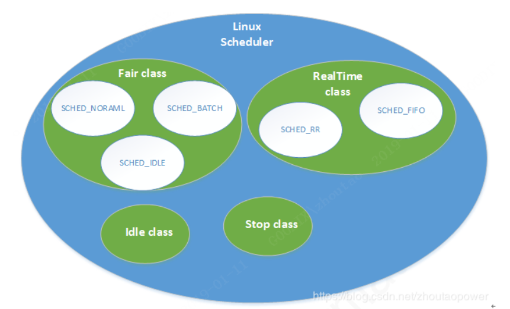

多线程编程
多线程编程
1.线程的基本概念
线程是进程中(独立的)一条执行流程(通常就是个函数)，它是CPU调度的基本单位。
同一个进程内多个线程之间可以共享代码段、数据段、打开的文件等资源，但每个线程各自都有一套独立的寄存器和栈，这样可以确保线程的控制流是相对独立的。
2.线程的实现
==关于内核线程和用户线程，看b站之前看的那个视频==
根据线程的运行环境和调度者的身份，可以将线程分为：用户线程和内核线程
- 用户线程：在用户态被创建，由线程库来进行调度
- 内核线程：在内核态被创建，由操作系统内核进行调度
同一个进程可以同时拥有M个内核线程和N个用户线程，根据M:N的大小，可以将线程的实现分成3种方式。
只有内核线程才能从操作系统拿到独立的CPU核心资源
2.1完全在用户空间实现
此时N个用户线程全部映射到一个内核线程上，这N个线程之间的创建和调度有线程库来进行。但内核根本不知道这N个用户线程的存在，故此时N个用户线程被内核当成一个线程来与其他进程的线程进行调度，和分配资源，最多同时拥有一个CPU核心，因此无法做到真正的并行执行，只能各个任务串行执行，就像FreeRTOS一样。
2.2完全在内核空间实现
此时每个用户线程都映射到一个内核线程上，线程的创建和调度都交给系统内核来进行，由于有N个内核线程，这N个用户线程都有可能拿到独立的CPU核心，因此可以实现真真的并行执行。
之前的多线程编程中，用
Qt时，重写的run()应该算是一个内核线程
2.3进程的调度
线程是CPU调度的基本单位，但教课书上一般都叫进程调度（这里把各进程看成只有一个线程的进程），因此我们也叫进程调度算了
2.3.0进程调度的概念
进程调度程序，简称进程调度，它是内核的一部分，该程序负责控制将哪个进程放到CPU上运行，何时运行以及运行多长时间
2.3.1调度算法的分类
多任务操作系统是指能同时并发执行多个进程的操作系统。
多任务系统的调度算法分为两类：非抢占式多任务（cooperative multitasking）和抢占式多任务（preemptive multitasking）
- ==非抢占式==是一种协作的方式，一个进程一直执行，直到任务结束或者主动进入阻塞态(I/O操作、信号量、互斥锁…)，才切换到下一个进程
- ==抢占式==是大部分操作系统采用的方式，一个进程在运行态，并未进入阻塞态或结束时，操作系统可以强行打断该进程而切换到另一个进程。比如时间片轮转法中，给每个进程分配一个时间片，当时运行时间达到规定的时间时则会切换到下一个进程。
2.3.2调度的准则
调度程序不是随便调度的，它会以某些准则来决定一下个被调度的程序是哪个。以下是一些常见的5条准则：
- CPU 利用率：调度程序应确保 CPU 是始终匆忙的状态，这可提高 CPU 的利用率；
- 系统吞吐量：吞吐量表示的是单位时间内 CPU 完成进程的数量，长作业的进程会占用较长的 CPU 资源，因此会降低吞吐量，相反，短作业的进程会提升系统吞吐量；
- 周转时间：周转时间是进程运行+阻塞时间+等待时间的总和，一个进程的周转时间越小越好；
- 等待时间：这个等待时间不是阻塞状态的时间，而是进程处于就绪队列的时间，等待的时间越长，用户越不满意；
- 响应时间：用户提交请求到系统第一次产生响应所花费的时间，在交互式系统中，响应时间是衡量调度算法好坏的主要标准。
通常为了遵循以上准则，操作系统优先调度I/O密集型任务，而不是计算密集型任务
2.3.3进程优先级
很多进程调度算法都是依据优先级来决定如何进行进程调度的，根据操作系统所使用的进程调度算法属于抢占式还是非抢占式，可以把优先级分为实时优先级和普通优先级。
2.3.4Linux操作系统使用的调度算法
Linux调度器是以分类的方式提供的，即对不同类型的进程进行分组并且==分别选择相应的算法==。
如下图Linux调度器包含了多种调度器类。
这些调度器类的优先级顺序为： Stop_Task > Real_Time > Fair > Idle_Task。
开发者可以根据己的设计需求把所属的Task配置到不同的scheduler classes中。其中的Real_Time和Fair是最常用的，也对应了我们上面提到的实时进程和普通进程。
（1）完全公平调度算法（Completely Fair Scheduler，CFS）：==非抢占式==
上图中的Fair Class即普通任务采用完全公平调度算法（Completely Fair Scheduler，CFS）。
这是一个针对普通进程的调度类，在Linux中称为SCHED_NORMAL（在POSIX中称为SCHED_OTHER）。
传统的时间片方式是每个进程固定一个时间，那么当进程个数变化时，整个调度周期顺延。时间片还会跟着系统定时器节拍随时改变，那么整个周期再次跟着变化。那么优先级低的进程可能迟迟得不到调度。
而CFS把整个调度周期的时间固定，该周期叫目标延迟（target latency），也不再采用时间片，而是根据每个进程的优先级得到的权重再计算得到处理器比例，进而得到进程自己的时间。该时间和节拍没有任何关系，也可以精确到ns。例如“目标延迟”设置为20ms，2个进程各10毫秒，如果4个进程则是各5毫秒。如果100个进程呢，是不是就是0.2毫秒呢？
不一定，CFS引入了一个关键特性：最小粒度。即每个进程获得时间片的最小值，默认是1毫秒。
为了公平起见，CFS总是选择运行最少（vruntime）的进程作为下一个运行进程。所以这样照顾了I/O消耗型短时间处理的需求，也将更多时间留给了CPU消耗型的程序。确实解决了多进程环境下因延迟带来的不公平性。
（2）实时调度策略
实时调度策略包括两种调度算法：SCHED_FIFO 和 SCHED_RR。
这两种实时进程都比任何普通进程的优先级更高（SCHED_NORMAL），都会比他们更先得到调度。
SCHED_FIFO：==非抢占式==
一个这种类型的进程处于可执行的状态，就会一直执行，直到它自己被阻塞或者主动放弃 CPU；它不基于时间片，可以一直执行下去，只有更高优先级的SCHED_FIFO或者SCHED_RR才能抢占它的任务，如果有两个同样优先级的SCHED_FIFO任务，它们会轮流执行，其他低优先级的只有等它们变为不可执行状态，才有机会执行。
SCHED_RR：==抢占式==
与SCHED_FIFO大致相同，只是SCHED_RR级的进程在耗尽事先分配给它的时间后就不能再执行了。所以SCHED_RR是带有时间片的SCHED_FIFO：一种实时轮流调度（Realtime Robin）算法。
上述两种实时算法实现的都是静态优先级。内核不为实时进程计算动态优先级，保证给定的优先级的实时进程总能够抢占比他优先级低的进程。
2.3.5Windows操作系统使用的调度算法
Windows内核的调度算法采用的是抢占式的多级反馈队列轮转法，该算法和FreeRTOS的任务调度算法类似，该进程调度算法不是基于时间片的，每次调度时，从就绪队列中取出优先级最高的任务进行调度。
在 Windows 中，每个进程都被分配一个初始优先级，并且系统会根据一定的规则来动态地调整进程的优先级。
通过抢占式调度算法，Windows 操作系统能够提供更好的响应性和公平性。当有新的进程需要执行或者已有进程的优先级发生变化时，操作系统可以迅速中断正在运行的进程，并将 CPU 分配给更紧急或更重要的任务。
非抢占式和抢占式：
- 非抢占式：当就绪队列中出现优先级高的进程，运行完当前进程，再选择优先级高的进程。
- 抢占式：当就绪队列中出现优先级高的进程，当前进程挂起，调度优先级高的进程运行。
但是依然有缺点，可能会导致低优先级的进程永远不会运行。
通过这里我们可以了解，如果某进程一直不被调度，那么跟操作系统使用的调度算法是不是抢占式的根本没关系，跟该进程的任务优先级才有关系。
2.3.6什么时候会发生进程的调度
在进程的生命周期中，当进程从一个运行状态到另外一状态变化的时候，会触发一次调度。
比如，以下状态的变化都会触发操作系统的调度：
- 从就绪态 -> 运行态：当进程被创建时，会进入到就绪队列，操作系统会从就绪队列选择一个进程运行；
- 从运行态 -> 阻塞态：当进程发生 I/O 事件而阻塞时，操作系统必须选择另外一个进程运行；
- 从运行态 -> 结束态：当进程退出结束后，操作系统得从就绪队列选择另外一个进程运行；
因为，这些状态变化的时候，操作系统需要考虑是否要让新的进程给 CPU 运行，或者是否让当前进程从 CPU 上退出来而换另一个进程运行。
3.线程的所有权
在写多线程的代码时，创建线程时需要指定线程所有权，来管理线程的==生命周期==和==行为状态==：
.join()：将线程的所有权转移给调用线程(创建该线程的线程)。执行该函数后，调用线程会阻塞等待被调用线程的结束，并在结束后对其进行资源回收。从线程同步的视角来看，这个函数也算一种线程同步方式：主线程等待子线程执行完毕。.detach()：将新创建的线程与父线程分离，使其所有权交还给操作系统，使得该线程在后台继续执行，而不会影响到主线程的执行。此时被调用线程的线程对象和线程执行的资源都由操作系统管理。
4.线程同步
多线程和多进程都需要考虑同步问题，虽然上面的
.join()能通过阻塞等待来实现父子线程的同步，但它解决不了一些复杂的问题，比如：控制各个线程对共享资源的独占式访问、在满足某个条件时唤醒某线程、控制资源的访问数量、控制各个线程执行的先后执行顺序….这就需要下面的同步方法来完成了。
4.1信号量
信号量主要用于控制资源的访问数量。可以设置一个初始值，表示可用的资源数量，每个线程在访问资源之前需要获取信号量，如果信号量大于0，则减少信号量的值并继续执行；如果信号量等于0，则线程需要等待，直到有其他线程释放资源使信号量增加。
信号量类通常含有以下的成员方法，或者说信号量一般有以下功能：
wait()：尝试获取信号量，如果信号量大于1个，则将信号量的数量减1然后接着执行后边的代码；如果信号量数量为0，则该线程阻塞，直到别的线程又释放信号量了post()：释放信号量，会使信号量的数量加1，如果此时某个线程因为wait()被阻塞，那么此线程接下来会被唤醒
4.2互斥锁
互斥锁(互斥量)一般用于保护重要的共享资源，确保各线程对该资源的独占式访问，与二进制信号量类似
互斥锁一般包含以下成员方法：
lock()：尝试给某互斥锁加锁，如果该互斥锁已被锁上，那么该线程阻塞等待，直到该锁在别的线程被解锁unlock()：给某互斥锁解锁，如果其他某个线程正因该锁处于阻塞态，那么该线程接下来会被唤醒
4.3条件变量
条件变量提供了一种线程间的通信机制，某些线程会因为 ”等待某个条件达成“ 而进入阻塞，另一种线程用于发出通知，告诉其他线程 ”条件已达成“ ，并唤醒那些正被阻塞的线程。条件变量一般需要和互斥锁一起使用。
举个例子，就是当时连接RTSP相机的时候，OpenCV那个打开相机的函数，如果打开失败的话需要几十秒才会返回，为了在主线程中加入连接超时(5s左右)报错的功能，就创了个子线程来连相机，并在主线程中调用
wait_for()来等待条件变量，子线程中在打开相机那个函数结束后会notify_one()，但主线程的wait_for()只阻塞等5s，超过了就直接往下执行了。如果没收到这个条件变量，就直接报错：相机连接失败。
条件变量一般包含以下成员方法：
wait()：阻塞等待目标条件变量，只有满足某些条件才会接着往下执行notify_all()：以广播的形式唤醒所有等待目标条件变量的线程notify_one()：唤醒一个等待目标条件变量的线程，具体唤醒哪个由调度算法决定
5.线程安全问题
线程的安全问题即对共享资源的同时访问的问题，详见上一章的线程同步
6.线程的数量
有的时候我们可能有疑问，什么时候需要用多线程，多线程的数量是不是越多越好呢？
对于I/O密集型的任务和计算密集型的任务，多线程的最佳数量是有区别的！
- I/O密集型任务：线程数量可以“无限”增多，因为大量线程都因为I/O操作而阻塞，CPU只会在个别没被阻塞的线程上跑
- 计算密集型任务：线程不要太多，如果线程开的太多，CPU来回调度反而会使程序的总体效率降低